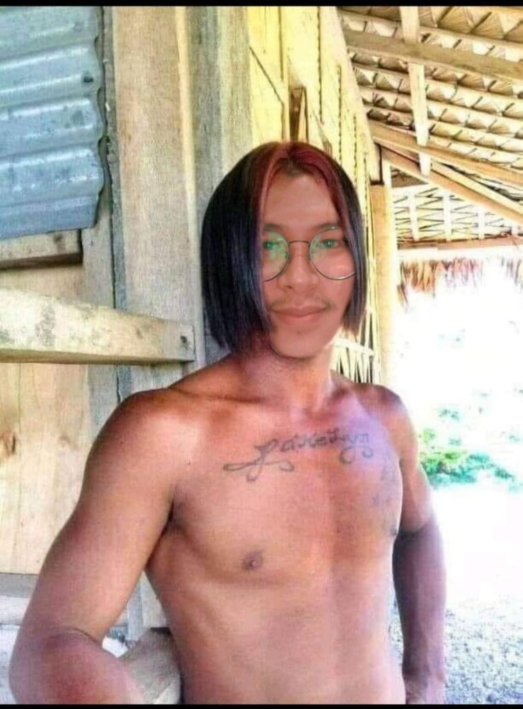
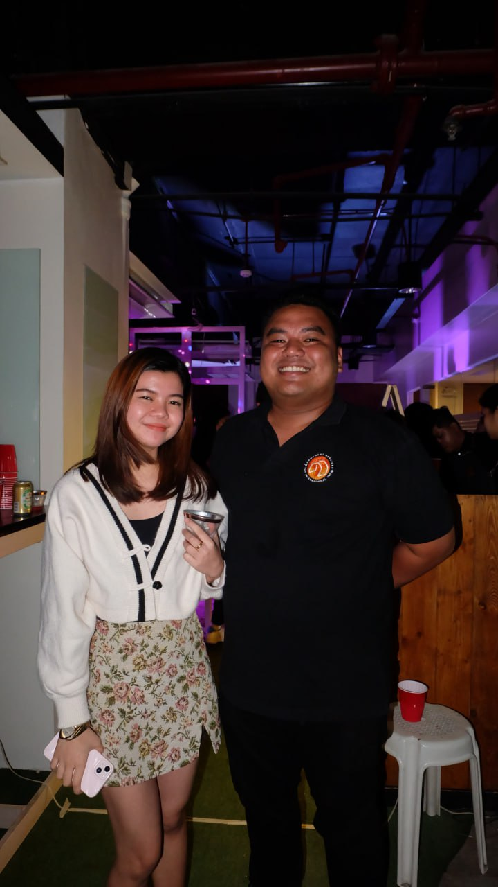
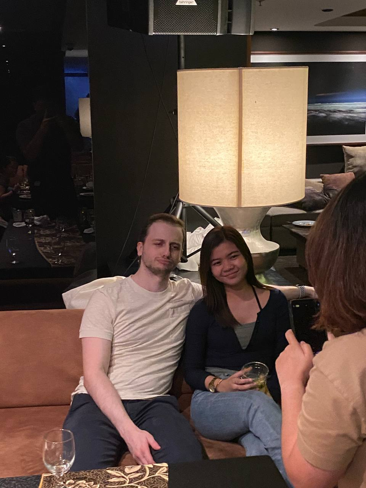

Magiting Moments
Home
Magiting Moments
Unang Paglaban sa Kalaban
4 Million B.C.
Unang Nakasagupa ng ating lider si Ben Tulfo, dito ay pinamalas ni Lider ang kanyang galing sa pag hiwa ng patola. Ginamit niya ang sandatang kahit hindi matulis, nakakahiwa.

Unang PagIbig
3 Million B.C.
Dito ay nakilala ng ating Lider ang kanyang unang pag-ibig na si ALL AN galing sa Tribo Mindanao. Sila ay nagpakasal ang nagkaroon ng 25 na anak

Unang Anak
2 Million B.C.
Sa tindi ng kanilang pagmamahalan, ito ay nagbunga at pinanganak nila ang kanilang kambal na panganay na si Tochiro Sasaki at Hitochi Kikisa.

Unang pagkabigo sa Pagibig, Pangalawang Asawa at Sumunod na Anak
1.8 Million B.C.
Matapos ang ilang taon na dumaan, nauwi din sa hiwalayan ang pagsasama ni Pinuno at ALL AN. Nahuli ni Pinuno si ALL AN na may kasiping na isang lalaki, hindi ito matanggap ni pinuno at inutusan ang mga katribo na siya ay putulan ng itlog at palayasin.
Matapos lumayas ni ALL AN sa Tribo, dumating naman ang hindi inaasahan ni Pinuno. Isang magiting na mandirigma galing sa Sitio Bangungot. Si Jey Si, nahulog agad ang loob ni Pinuno at sila ay gumawa ng bata.
Isinilang si Den Den, ang unang anak ni Pinuno kay Jey Si. Lumaking Maldita si Den Den at hindi ito ikinatuwa ni Pinuno kaya't sa kanyang ama ito nag labas ng sama ng loob. Pinadampot niya si Jey Si at itinali sa Puno ng Makopa para gulpihin. Pinaghahampas ng Dahon ng malunggay ito ng mga alagad ni Pinuno. Hindi kinaya ni Jey Si ang sakit at ito ay agad na pumanaw.
Nalaman ni Den Den ang sinapit ng kanyang ama at ito ay sumigaw ng pabulong. Hindi niya kinaya at siya ay naglayas ng walang medjas.

Ikatlong Pag-Ibig
1.5 Million B.C.
Nagsisi si Pinuno sa kanyang nagawa, hindi niya napatawad ang kanyang sarili kaya sa loob ng 300K years, hindi ito lumabas ng banyo. Pero isang araw, may dumating na bisita si Pinuno, isang magiting na mandirigma galing Baryo Tomador.
Siya ay si Peliks KatBa, nalaman niya na walang kasalukuyang kasintahan si Pinuno kaya agad agad siyang naglakbay para puntahan ito.
Nung una ay hindi siya pinapansin ni Pinuno dahil masama padin ang kanyang loob sa nagawa niya sa kanyang mag-ama. Pero kalaunan ay naging marupok ito at kinilig ng ilabas ni Peliks ang kanyang Matabang Alaga. Isang Kuto pala ang pinakita niya kay Pinuno at agad namang ngumiti ito.
Matapos ang ilang daang libong taon ay nagkatuluyan sila at nagkaanak pa ng 15.

Digmaang Pangkalawakan
1.2 Million B.C.
Habang nanahimik ang mundo, nagulantang ang lahat ng biglang pagsugod ng mga halimaw na nag mula sa ibang planeta.
Sa kasamaang palad, nadamay at nasaktan ang ilang anak ng ating lider. Dahil dito, nag ensayo ang ating lider para ipaghiganti ang kanyang mga anak at nakilala niya ang isang ermitanyo. Siya ay si Ka Jeren, nagmula sa bayan ng Dagupan kung saan nakikita ang mga bangus na walang buto.
Ang ermitanyong ito ang nagbigay sa ating lider ng kapangyarihan na kayang lumaban sa mga halimaw, binigyan niya ng hiyas si pinuno
Hiyas mula sa karagatang pantropiko. Ginamit ito ng ating lider para sugpuin ang mga kalaban. Sa una mahirap dahil kada gamit ng hiyas ng ating lider, siya ay kailangang dumumi ng 15 times dahil hindi niya pa kontrolado ang kapangyarihan na ito.
Pero nagamay din ito ni pinuno. Nilabanan niya lahat at inubos ang halimaw. Nagwagi ang mga tao at malaking pasasalamat nila kay Pinuno.

Makalumang Pagibig
1 Million B.C.
Ilang daang libong taon lumipas makatapos ang digmaan,
Sa hindi inaasahang pagkakataon, nasawi si Peliks Katba dahil sa matinding sakit mula sa langgam. Dinamdam ito ng ating lider at hindi kumain ng 20 minutes.
Dito bumalik ang tumulong sa ating pinuno na si Ka Jeren, pero nagulat si Pinuno ng biglang nagbago ang anyo ng ermitanyo at naging gwapong binata. Kinilig dito si Pinuno at biglang sumampa sakanya
Nagkatuluyan ang dalawa at nagpakasal sa Pari ng Tondo na si Mang Gie
Nagsama sila ng matagal at nagbunga ng 11 na anak. 4 na panganay at 7 bunso


Ang Pagbabalik
800,000 B.C.
Masayang namumuhay sina Ka Jeren At Pinuno kasama ng kanilang mga anak sa Tribo LakanBu.
Pero nagulat ang kanilang tahimik na buhay ng nagbalik ang anak ni Pinuno na si Den Den.
Marami ang nabigla pero hindi si Pinuno dahil matagal niyang inantay ang oras na ito. Nagkapatawaran sila at pinakilala ni Pinuno ang kanyang bagong pamilya kay Den Den.
Unang Kita palang ni Den Den kay Ka Jeren ay iba na ang kanyang naramdaman. Nabasa ng onti ang kanyang
Likod dahil sa pawis.
Nung unang mga buwan ay naging normal ulit ang buhay ng pamilya at walang humpay na kasiyahan
Dahil sa mga kasiyahan sa tribo, hindi naiwasang maging malapit sa isat'isa si Ka Jeren at kanyang Step-Daughter na si Den Den
Lagi na silang nag uusap at napunta sa ika limang bundok para magpahangin.
Napansin ito ni Pinuno pero pinagwalang bahala nalang dahil iniisip niya na nagiging magkalapit lang ang dalawa kasi namimiss ni Den Den ang kanyang itay.
Hanggang isang gabi, niyaya ni Den Den si Ka Jeren na pumunta sa Padis PoloAnti para mag relaks. Sumama naman ito sakanya at gumora na.
Nagkasiyahan ang dalawa at hindi namalayang nasa harap na sila ng isang Abandonadong Portalet. Naginit ang kanilang sarili at hind na napigilang gawin ang hindi dapat.
Wala na silang nagawa at itinuloy ang kanilang bawal na pagsasama. Tumagal ito ng ilang libong taon bago mapansin ni Pinuno na lumalaki na ang tiyan ni Den Den.
Nung una ay sinabi pa ng kanyang anak na si Erwin mula sa bayan ng Tanbicuts ang ama pero nahuli din sila at nalaman na si Ka Jeren ang kanyang kalaguyo.
Sobrang dinamdam to ni Pinuno dahil hindi lang siya niloko ng kanyang asawa pati ang kanyang anak na muli niyang tinanggap.
Dahil mahal niya padin si Ka Jeren, hindi niya pinarusahan ng kamatayan ang dalawa. Pinalayas niya lang ito sa kanilang tribo.
Pagsubok ni Pinuno
600,000 B.C.
Dumaan ang ilang taon ngunit nanatiling malungkot ang ating bida.
hindi nakausap ang ating pinuno nino man kahit ang kanyang mga anak dahil sa sobrang sakit ng dinulot sakanya.
Marami din ang bumisita mula sa ibat'ibang tribo para bihagin ulit ang kanyang puso nguti lahat sila ay bigo
Pero lahat ito ay nagbago ng dumating ang isang mandirigma mula sa bayan ng Tulis na si Ginoong Bagoong 700,000 BC. Siya ay si Tristan "MangoMan" Sajones
Unang Kita palang ni Pinuno ay bumalik agad ang mga ngiti sa kanyang mukha na para bang nakakita ng isang engkantong matulis. Hindi napigilan ni Pinuno na humiyaw ng "syet ang tulis niya"
Nagkapalagayan sila ng loob at nauwi sa kasalan. Naging masaya ang kanilang pagsasama pero ito ay naputol dahil sa hindi inaasahang pangyayari.
Aksidenteng natusok ni Tristan ang kanyang sarili ng biglang yumuko para iwasan ang isang sanga. Hindi na naagapan ng MANGGAgamot at agad ikinasawi ito ng ginoo.
Pero nagulat ang lahat ng hindi manlang nalungkot ang ating bida. Sinabi niyang ilibing na agad dahil ayaw na niya ito makita.

Mabangong Yugto
400,000 B.C.
Nawala man ang kanyang irog ay hindi nagluksa ang ating pinuno dahil sa isang sikreto na hindi lumantad.
Matagal na palang may lihim na relasyon si Pinuno sa isang Engkantadong itago natin sa pangalang Jumbo Hotdog
Si Jumbo Hotdog ay nagmula sa kaharian ng mga engkantong Pogi. Nahulog ang loob ni pinuno dito ng minsan ay bumisita siya sa isang ilog kung saan siya ay naghuhugas ng pinggan.
Nagkaligawan ang dalawa at nagkatuluyan. Pero dahil may asawa si Pinuno ng mga oras na ito ay kinailangan nila itago ang kanilang relasyon.
Tuwing Gabi ay napunta sa bubong si Pinuno para kausapin si Jumbo. Doon sila naglalampungan at nagkukunwaring mga Pusa para hindi mahuli.
Nagbunga ang pagtataksil nila at nabuntis si Pinuno. Kinabahan ang dalawa at nagisip ng plano. Doon nila napagdesisyunan na iligpit na si Tristan.
Hindi pala aksidente ang nangyari sa pagkamatay ni Tristan dahil na plano ito ni Pinuno at ni Jumbo.
Walang nakakaalam ng sikreto na ito ni Pinuno. Except kay Kristian Santos na isang mahusay na Writer.

Masilamuot na pangyayari
350,000 B.C.
Hanggang sa huli ay walang nakaalam ng sikreto nila Pinuno at ni Hotdog.
Masaya ang kanilang pagsasama at laging sinisinghot ni pinuno ang batok ni Hotdog dahil para sakanya ito ang pinakamabangong amoy sa buong mundo. Ngunit may isang hindi inaasahang pangyayari ang dumating.
Matagal na pala ninanakawan ni Jumbo Hotdog si pinuno at ang kanyang tribo, bigla nalang siyang nawala at tinangay ang kayamanan nila
Sobrang nagalit si Pinuno pero wala silang nagawa dahil hindi na nila mahagilap si Hotdog. Kaya nalugmok ang buong tribo.
Pero sa pagsubok na ito ng tribo ay may isang banyagang dumating at nabighani sa ganda ng ating lider. Si Aleksus Pegasus na galing sa bansang Bulgar-Bulgar kung saan siya ang prinsipe.
Hindi na nag atubili si Pinuno at pinatulan ito dahil alam niyang ito ang makakapag ligtas sakanilang tribo
Agad silang nagpakasal at nabigyan ulit ng yaman ang tribo.
